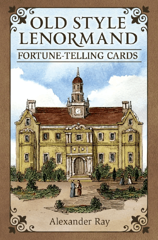

传统雷诺曼 · Königsfurt-Urania
Old Style 雷诺曼
传统
1890 年代复刻
石版印刷
实用牌组
古典
忠实复刻 19 世纪末的雷诺曼图像——1880、1890 年代欧洲执业解读者手中真正在用的那副牌，经过修整后以现代工艺重印。

Old Style Lenormand（老式雷诺曼）忠实复刻了 19 世纪末的雷诺曼图像，由捷克-奥地利出版商 Königsfurt-Urania 制作。多数现代牌组会用全新的画作重新诠释这 36 张牌，Old Style 反其道而行：它回到 1880、1890 年代欧洲执业解读者手中的石版原图，为现代印刷做清理修整，再原样交还给使用者——一副沉静而有分量的实用牌。
成品既有档案感，又经得起日常使用——适合那些希望自己手中的牌，看起来就像老师的老师用过的那副牌的人。
柔和的彩色石印色调，微微泛黄的米白底纸，以及维多利亚时代占卜牌典型的精细小场景。每张牌上都有编号、内嵌的扑克牌，以及那个符号——骑在马上的骑士、破浪而行的船、置身山景中的高山——全部以 19 世纪末欧洲印刷文化那种一眼可辨的风格绘出。
有些传统雷诺曼牌会在牌面印上诗句，这副牌也保留了下来，多数版本仍是德文原文。
想看到欧洲雷诺曼传统鼎盛时期牌面本来样貌的人。在传统派牌组里，Old Style 与 Blue Owl 并列为首选，两者也常被拿来比较——Blue Owl 更偏民间艺术，Old Style 更忠于石印原貌。它们教的是同一套系统，选哪一副只是审美问题。
严格的传统 36 张，沿用古典编号与扑克牌对应。没有附加牌，也没有替代版本——这份保守是刻意的。
由 Königsfurt-Urania 出版（有时以 AGM-Urania 品牌发行），欧洲的占卜牌经销商和多数线上塔罗商店都有售。价格亲民，长期在版。